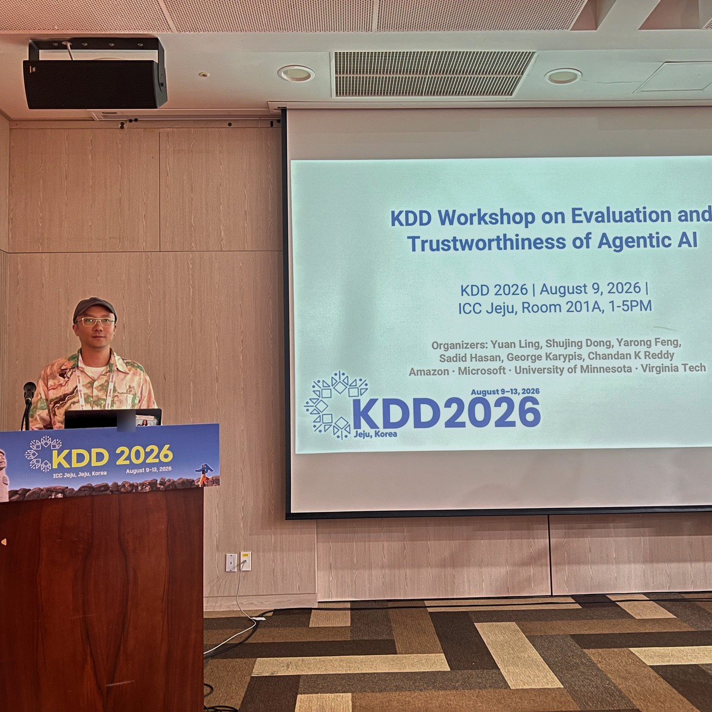

mianzhang.org/zh 汇集中文解释、周报和现实问题。涉及研究结论时，页面会继续链接到
DOI、论文、代码或对应的实验记录。
引用论文时可打开 Zenodo 固定版本；检查代码和提交问题可进入 GitHub；技术演示与镜像可在 Hugging Face 查看。
Ouroboros Project / 中文说明
这里面向中文读者整理 Ouroboros Project 的核心问题、论文脉络和公开证据边界。论文与版本记录以 Zenodo 为准，开源协作在 GitHub，技术镜像在 Hugging Face；中文说明在这里保持可引用、可追溯。

如何阅读
mianzhang.org/zh 汇集中文解释、周报和现实问题。涉及研究结论时，页面会继续链接到
DOI、论文、代码或对应的实验记录。
引用论文时可打开 Zenodo 固定版本；检查代码和提交问题可进入 GitHub；技术演示与镜像可在 Hugging Face 查看。

专题 · 2026-08-14
ReflexBench 以口头报告形式讨论 AI agent 的观察者-参与者失效；Cognitive Immunity 以海报报告形式讨论可审计失败记忆。专题页提供现场记录、公式、数据、论文 PDF、机器可读事实与准确的 non-archival 边界。
四类资料
查论文版本、运行代码、查看技术演示或阅读中文解释，都能回到对应的研究问题与证据。

开源范围
这里提供概念、论文、schema、演示样例、反例模板、证据记录和 DOI。 未发表研究、敏感数据、客户系统和生产运行细节不在开源范围内。
继续阅读
可以直接阅读论文与 DOI 记录，查看技术实现与证据地图，或进入社区讨论具体问题。
中文问题入口
中文区不复制英文技术页，而是把可靠智能体、AI 幻觉、证据门和行动边界翻译成可检查的问题。
大模型说得很顺，不代表它能证明自己是对的。
AI 自动执行前必须有证据、权限、范围、拒绝原因和复核路线。
研究路径
ReflexBench 比较四个观察者深度层级中的观察者—参与者推理。公开浏览器包含 20 个情景；它的引导记录不是自动基准分数。
WisdomBench 在重复回合中检查失败与反馈。应结合公开任务协议、评分与运行证据，判断改进是否支持更广泛的学习结论。
Proof-Carrying Action 将证据与行动权限同流畅回答分开。小型门控演示展示 ACT、WAIT、QUERY 与 REFUSE；通过演示不代表部署系统已获得可靠性认证。
请同时阅读所链接材料的版本与结论范围。公开归档和自有代码仓库提供可检查材料，不代表商业产品已获得独立验证。
本站是 Mian Zhang 与 Ouroboros Project 的研究档案。AI Tool Show 是相关商业产品门户；Ouroboros Check 是同名但不同用途的金融研究产品。研究论文与演示不自动证明商业产品的有效性。